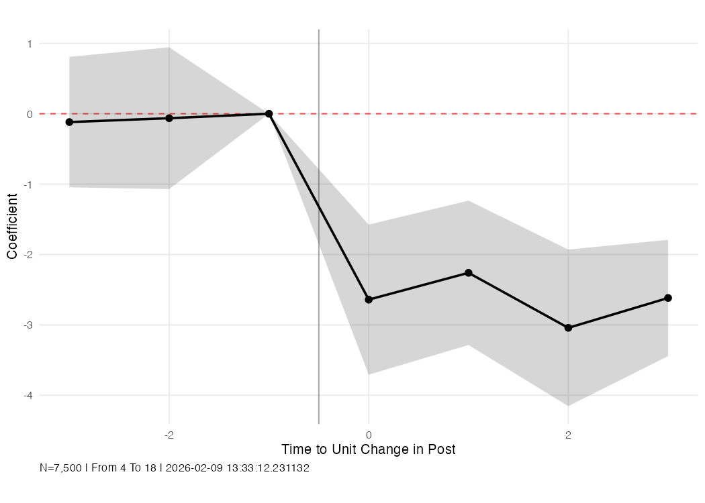

R Guide¶
Basic Usage¶
library(dlm)
mod <- distributed_lags_model(
data = outcome_data,
exposure_data = treatment_data,
from_rt = -3, to_rt = 3,
outcome = "y", exposure = "treated",
unit = "id", time = "year"
)
The R version takes separate data frames for outcomes and exposure. This is useful when the exposure is defined at a different level (e.g., pharmacy-level treatment merged onto beneficiary-level outcomes).
Data Setup¶
The R DLM expects two data frames:
data— contains unit, time, outcome, and any covariatesexposure_data— contains unit, time, and the exposure variable (one row per unit-time)
library(dlm)
library(dplyr)
# Example: separate outcome and exposure data
outcome_data <- full_data %>% select(id, year, y, x1, x2)
exposure_data <- full_data %>% select(id, year, treated) %>% distinct()
If your data is a single data frame, just select the relevant columns:
df <- generate_data(seed = 42)
data <- df %>% select(group, time, outcome)
exposure_data <- df %>% select(group, time, post) %>% distinct()
Examples¶
Basic estimation¶
library(dlm)
library(dplyr)
df <- generate_data(seed = 42, n_groups = 500, n_times = 20, treat_prob = 0.4)
data <- df %>% select(group, time, outcome)
exposure_data <- df %>% select(group, time, post) %>% distinct()
mod <- distributed_lags_model(
data = data,
exposure_data = exposure_data,
from_rt = -3, to_rt = 3,
outcome = "outcome", exposure = "post",
unit = "group", time = "time"
)
mod$betas
Output:
time_to_event coef se
post_lead2 -3 -0.11846256 0.4729260
post_lead1 -2 -0.06327287 0.5139965
post_lag0 0 -2.64104056 0.5438700
post_lag1 1 -2.26029265 0.5234023
post_lag2 2 -3.04210098 0.5674556
post_lag3 3 -2.61751913 0.4214689
Custom reference period¶
mod <- distributed_lags_model(
data = data,
exposure_data = exposure_data,
from_rt = -3, to_rt = 3,
outcome = "outcome", exposure = "post",
unit = "group", time = "time",
ref_period = -2
)
With covariates¶
data_with_covs <- df %>% select(group, time, outcome, x1, x2)
mod <- distributed_lags_model(
data = data_with_covs,
exposure_data = exposure_data,
from_rt = -3, to_rt = 3,
outcome = "outcome", exposure = "post",
unit = "group", time = "time",
covariates = c("x1", "x2")
)
Additional fixed effects¶
mod <- distributed_lags_model(
data = data,
exposure_data = exposure_data,
from_rt = -3, to_rt = 3,
outcome = "outcome", exposure = "post",
unit = "group", time = "time",
addl_fes = c("region")
)
Multiple outcomes¶
Use distributed_lags_models (plural) to estimate multiple outcomes:
mods <- distributed_lags_models(
data = data,
exposure_data = exposure_data,
from_rt = -3, to_rt = 3,
outcomes = c("outcome1", "outcome2"),
exposure = "post",
unit = "group", time = "time"
)
# Access each model
mods[[1]]$betas
mods[[2]]$betas
Weighted regression¶
mod <- distributed_lags_model(
data = data,
exposure_data = exposure_data,
from_rt = -3, to_rt = 3,
outcome = "outcome", exposure = "post",
unit = "group", time = "time",
weights = "pop_weight"
)
Working with Results¶
The returned object is a list:
names(mod)
# [1] "betas" "plot" "model" "vcov" "data_periods_included"
# [6] "fmla_str" "from_rt" "to_rt" "exposure" "outcome"
Beta coefficients¶
mod$betas
# time_to_event coef se
# post_lead2 -3 -0.11846256 0.4729260
# post_lead1 -2 -0.06327287 0.5139965
# post_lag0 0 -2.64104056 0.5438700
# post_lag1 1 -2.26029265 0.5234023
# post_lag2 2 -3.04210098 0.5674556
# post_lag3 3 -2.61751913 0.4214689
Built-in event-study plot¶

The plot is a ggplot2 object. Customize it further:

You can also use time_labels to map time period values to readable labels in the caption:
mod <- distributed_lags_model(
..., time_labels = c("4" = "Jan 2010", "18" = "Dec 2016")
)
# Caption will show "From Jan 2010 To Dec 2016" instead of "From 4 To 18"
Access the underlying fixest model¶
Test Data Generator¶
| Argument | Default | Description |
|---|---|---|
seed |
1234 | Random seed |
n_groups |
676 | Number of panel units |
n_times |
20 | Number of time periods |
treat_prob |
0.4 | Treatment probability |
Key variables: group, time, treat, treatment_time, years_to_treatment, post, outcome.